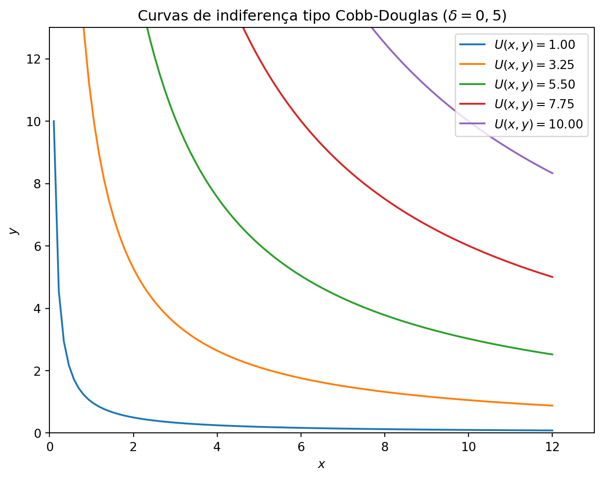
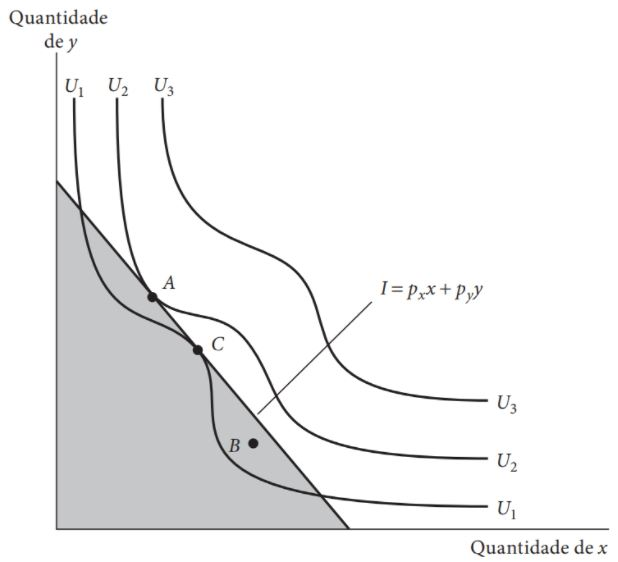
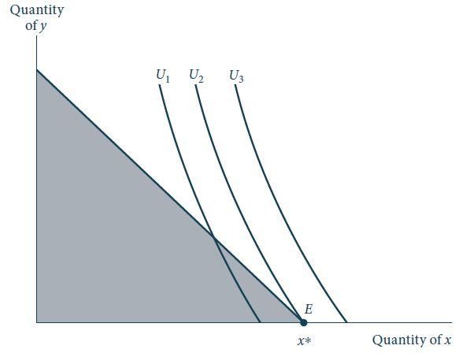

Maximização de Utilidade e Escolha
Funções utilidade para preferências específicas
Cobb-Douglas
Uma função utilidade comumente utilizada é a função do tipo Cobb-Douglas. A função utilidade do tipo Cobb-Douglas apresenta a seguinte forma funcional: \[U(x,y) = x^\alpha y^\beta, \qquad 0<\alpha, \beta < 1.\]
De forma geral, os parâmetros \(\alpha\) e \(\beta\) representam a importância relativa dos bens \(x\) e \(y\) para este indivíduo.
Normalmente, é conveniente normalizar os parâmetros de forma com que \(\alpha + \beta = 1\). Neste caso, a função utilidade seria dada por: \[U(x,y) = x^\delta y^{1-\delta},\] onde \(\delta = \alpha/(\alpha + \beta)\) e \(1-\delta = \beta/(\alpha + \beta)\).
Cobb-Douglas
Cobb-Douglas
Code
# Importando bibliotecas. Vamos simular as curvas de indiferença de uma função utilidade do tipo Cobb-Douglas com dois argumentos, x e y.
# selecionando apenas um parâmetro (delta), sendo o outro parâmetro (1-delta) definido como complementar.
# A utilidade será dada para 10 valores diferentes, sendo que o argumento y é que será calculado em função de x e desta utilidade
import numpy as np
import matplotlib.pyplot as plt
# Calculando o valor y
def y(x, u, delta):
return (u*x**(-delta))**(1/(1-delta))
# Definindo os valores de x e delta
x = np.linspace(0.1, 12, 100)
delta = 0.5
u = np.linspace(1, 10, 5)
# Criando a figura usando sintaxe orientada a objetos
fig, ax = plt.subplots(figsize=(8, 6))
# Plotando as curvas de indiferença
for i in u:
ax.plot(x, y(x, i, delta), label=f'$U(x,y) = {i:.2f}$')
# Definindo os limites dos eixos
ax.set_xlim(0, 13)
ax.set_ylim(0, 13)
# Definindo os rótulos dos eixos
ax.set_xlabel('$x$')
ax.set_ylabel('$y$')
# Definindo o título do gráfico
ax.set_title(f'Curvas de indiferença tipo Cobb-Douglas ($\delta = 0,5$)')
# Definindo a legenda
ax.legend()
# Mostrando o gráfico
# plt.show()<matplotlib.legend.Legend at 0x7f753a185f40>
Substitutos perfeitos
A função utilidade para o caso de bens substitutos perfeitos é dada por: \[U(x,y) = \alpha x + \beta y, \qquad \alpha,\beta > 0.\]
Neste caso, as curvas de indiferença são lineares.
A linearidade das curvas de indiferença motiva a denominação de bens substitutos perfeitos para descrever a relação entre \(x\) e \(y\).
Uma pessoa com esse tipo de preferências está disposta a abrir mão da mesma quantidade do bem \(y\) para adquirir uma unidade adicional de \(x\), não importa quanto de \(x\) esteja sendo consumido - a TMS é constante e o princípio de taxa marginal de substituição decrescente não se aplica.
Substitutos perfeitos
Complementares perfeitos
Uma situação diretamente oposta à de substitutos perfeitos é ilustrada para o caso de bens complementares perfeitos, cuja função utilidade é da forma: \[U(x,y) = \min\{\alpha x, \beta y\}, \qquad \alpha, \beta > 0.\]
Neste caso, as curvas de indiferença tem um formato de \(L\) e a razão da quantidade consumida de \(y\) com relação ao bem \(x\) é constante e igual: \[\frac{y}{x} = \frac{\alpha}{\beta}.\] Indicando que nenhum dos bens especificados na função utilidade será consumido de maneira supérflua quando \(\alpha x= \beta y\).
Complementares perfeitos
Elasticidade de substituição constante (CES)
Um problema com as funções utilidades supracitadas é que assumem curvas de indiferença com formas pré-definidas.
Uma função utilidade que permite vários formatos distintos é a função utilidade de elasticidade de substituição constante (CES): \[U(x,y) = [x^\delta + y^\delta]^{\frac{1}{\delta}}, \qquad \delta \leq 1, \delta \neq 0. \label{ces}\]
Essa função incorpora as três vistas anteriormente:
Se \(\delta = 1\), temos o caso de substitutos perfeitos.
Se \(\delta \to 0\), a CES tende a uma função do tipo Cobb-Douglas.
Se \(\delta \to -\infty\), a CES tende ao caso de complementares perfeitos.
Podemos fazer uma transformação monotônica \(U^* = U^\delta/\delta\) e obter uma forma mais tratável: \[U(x,y) = \frac{x^\delta}{\delta} + \frac{y^\delta}{\delta}.\]
Elasticidade de substituição constante (CES)
Preferências homotéticas e não-homotéticas
Uma função utilidade é homotética se sua taxa marginal de substituição depende apenas da razão entre as quantidades dos bens, e não de suas quantidades totais.
A importância de funções utilidade homotéticas é que suas curvas de indiferença são similares. A inclinação das curvas depende apenas da razão entre os bens, e não do quão distante as curvas estão da origem.
As curvas de indiferença associadas a utilidades mais altas são cópias das de utilidades mais baixas.
Portanto, podemos estudar o comportamento de um indivíduo que tenha preferências homotéticas olhando apenas uma curva de indiferença (ou um número pequeno), sem nos preocupar que o resultado altere drasticamente para níveis diferentes de utilidade.
Preferências homotéticas e não-homotéticas
Exercício
Mostre que as quatro funções utilidades estudadas anteriormente exibem preferências homotéticas.
Mostre que a função utilidade quasi-linear: \[U(x,y) = x + \ln y,\] não exibe preferências homotéticas.
Caso de muitos bens
Se o indivíduo deriva utilidade do consumo de \(n\) bens, sua função utilidade pode ser representada como: \[U(x_1, \dots, x_n).\]
Portanto, a equação: \[U(x_1, \dots, x_n) = k,\] define uma superfície de indiferença \(n\)-dimensional.
Continuaremos assumindo que a superfície de indiferença é convexa. Isto é, cestas de consumo mais balanceadas são preferíveis às não-balanceadas.
Portanto, assume-se que a função utilidade é quasi-côncava.
Caso de muitos bens
Podemos estudar as trocas voluntárias que um indivíduo esteja disposto a fazer entre dois bens quaisquer (\(x_1\) e \(x_2\)) usando o teorema da função implícita para obter a TMS: \[TMS = \left.-\frac{dx_2}{dx_1}\right|_{U(x_1, \dots, x_n) = k} = \frac{U_{x_1}(x_1, \dots, x_n)}{U_{x_2}(x_1, \dots, x_n)}.\]
A disposição de um indivíduo em trocar \(x_1\) por \(x_2\) depende não só da quantidade desses bens mas, também, das quantidades de todos os outros bens.
Maximização de utilidade e escolha
Introdução
As preferências e a restrição orçamentária, que estudamos até agora, contem informações distintas sobre o consumidor.
As preferências, ou funções utilidade, refletem o gosto do consumidor, sem considerar o que de fato pode ser consumido.
A restrição orçamentária reflete as possibilidades de compra do indivíduo, sem considerar suas preferências.
Agora estudaremos o modelo básico de escolha que economistas utilizam para explicar o comportamento dos consumidores.
Esse modelo combina esses dois conceitos (preferências e restrição orçamentária) e assume que os indivíduos que são limitados por uma restrição orçamentária se comportarão de forma a obter a maior utilidade possível.
Isto é, caracterizamos o problema da escolha do consumidor como um problema de maximização de utilidade sujeito à restrição orçamentária - problema primal do consumidor.
Introdução
Mesmo que as aplicações deste modelo sejam das mais variadas, todas elas estão fundamentadas no mesmo tipo de modelo matemático e chegam à mesma conclusão geral: para maximizar utilidade, os indivíduos escolherão cestas de bens de maneira a igualar a taxa de tradeoff entre quaisquer dois bens (a TMS) à razão entre os preços de mercado destes bens.
Portanto, os preços de mercado transmitem informações acerca dos custos de oportunidade para os indivíduos, e essa informação tem um papel fundamental nas escolhas que serão feitas.
Resultados preliminares
Princípio da otimização de utilidade. Para maximizar utilidade, dada uma quantidade fixa de renda a ser gasta, um indivíduo comprará as quantidades de bens que esgotarão sua renda total e para as quais a taxa psíquica de troca entre quaisquer dois bens (TMS) seja igual à taxa em que os bens podem ser trocados um pelo outro no mercado.
Se o indivíduo não despender toda sua renda, não estará maximizando sua utilidade. Já que unidades extras de bens fornecem utilidade extra ao indivíduo, não é ótimo deixar renda não gasta em um cenário em que não há outros usos pra renda.
A segunda condição nos diz que a taxa marginal de substituição (TMS) de \(x\) por \(y\) será igual à razão entre os preços de mercado destes bens \(p_x/p_y\).
Análise gráfica
Análise gráfica
Condições suficientes de segunda ordem para um máximo
A condição de tangência vista anteriormente é apenas uma condição necessária para o máximo.
No entanto, não é uma condição suficiente. Considere o caso em que as curvas de indiferença não obedecem a hipótese de TMS decrescente. Neste caso, nem todos os pontos de tangência são pontos que maximizam a utilidade.
Para que as condições necessárias de um máximo sejam também suficientes, devemos assumir que a TMS é decrescente. Isto é, que a função utilidade é estritamente quasi-côncava.
Análise gráfica
Condições suficientes de segunda ordem para um máximo
Figura 1: Curvas de indiferença para as quais a CPO não é suficiente. Fonte: Nicholson e Snyder (2019).
Soluções de canto
O problema primal do consumidor ilustrado anteriormente resultou em um ponto crítico interior, no qual quantidades positivas de ambos os bens eram consumidos.
Em algumas situações, as preferências dos indivíduos podem ser tais que maximizarão utilidade ao escolherem consumir uma quantidade nula de um dos bens.
Se alguém não gosta de hamburger, não há motivos para alocar parte de sua renda consumindo este bem.
Neste caso temos uma solução de canto.
Soluções de canto
Figura 2: Soluções de canto. Fonte: Nicholson e Snyder (2019).
Soluções de canto
Na Figura 2 vemos que a utilidade é maximizada no ponto \(E\), com \(x = x^*\) e \(y = 0\).
Qualquer ponto da restrição orçamentária em que quantidades positivas de \(y\) são consumidas produz uma utilidade menor que o ponto \(E\).
Note que em \(E\) a restrição orçamentária não é precisamente tangente à curva de indiferença \(U_2\).
No ponto ótimo, a restrição orçamentária é mais plana que a curva de indiferença. Isso indica que a taxa em que \(x\) pode ser trocado por \(y\) no mercado é menos que a taxa marginal de substituição. Nos preços de mercado prevalecentes, o indivíduo está mais do que disposto a trocar \(y\) para obter \(x\) adicionais.
Por ser impossível consumir quantidades negativas do bem \(y\), o limite físico para esse processo é o eixo horizontal, ao longo do qual a quantidade consumida de \(y\) é zero.
Análise formal para o caso de n bens
Condições de primeira ordem
- O problema primal do consumidor, para o caso de \(n\) bens, pode ser escrito como:
\[\begin{aligned} & \underset{\textbf{x}\in \mathbb{R}_+^n}{\text{maximizar}} & & U(x_1, \dots, x_n), \\ & \text{sujeito a} & & p_1x_1 + \dots + p_nx_n = I. \end{aligned} \qquad(1)\]
Então, o consumidor escolhe os bens que maximizam sua utilidade e que estão dentro da sua possibilidade de consumo (satisfazem sua restrição orçamentária).
Para resolver o problema de otimização com restrições, Equação 1, construímos o Lagrangeano:
\[\mathcal{L} = U(x_1, \dots, x_n) + \lambda(I-p_1x_1-p_2x_2-\dots-p_nx_n), \qquad(2)\]
onde \(\lambda\) é o multiplicador de Lagrange.
Condições de primeira ordem
- As \(n+1\) equações que representam as condições necessárias de primeira ordem para um máximo interior são dadas por:
\[\begin{aligned} \frac{\partial\mathcal{L}}{\partial x_1} &=& \frac{\partial U}{\partial x_1} - \lambda p_1 = 0, \\ \frac{\partial\mathcal{L}}{\partial x_2} &=& \frac{\partial U}{\partial x_2} - \lambda p_2 = 0, \\ \vdots \\ \frac{\partial\mathcal{L}}{\partial x_n} &=& \frac{\partial U}{\partial x_n} - \lambda p_n = 0, \\ \frac{\partial\mathcal{L}}{\partial \lambda} &=& I - p_1x_1 - p_2x_2 - \dots - p_nx_n = 0. \end{aligned}\]
Condições de primeira ordem
Esse sistema de \(n+1\) equações pode, em princípio, ser solucionado para \(x_1, \dots, x_n\) e \(\lambda\).
Lembre-se que as CPOs são condições necessárias, mas não suficientes, para garantir a otimalidade da solução.
As condições suficientes de segunda-ordem para assegurar que os pontos críticos obtidos são, de fato, pontos interiores de máximo local são extremamente complexos.
Aqui vamos adotar a hipótese de quasi-concavidade estrita (uma TMS decrescente para o caso de 2 bens) e que a restrição orçamentária é linear. Com isso, as CSOs para o problema do consumidor são satisfeitas.
Implicações das CPOs
- Para quaisquer dois bens \(x_i\) e \(x_j\), temos que:
\[\frac{\partial U/\partial x_i}{\partial U/\partial x_j} \equiv \frac{U_{x_i}}{U_{x_j}} = \frac{p_i}{p_j}.\]
Vimos, anteriormente, que a razão entre utilidades marginais de dois bens é igual à taxa marginal de substituição entre eles.
Portanto, as condições de otimalidade de alocação da renda torna-se:
\[TMS_{x_i \text{por} x_j} = \frac{p_i}{p_j}.\]
Ou seja, para maximizar sua utilidade o indivíduo deve equalizar a taxa psíquica de trade-off (TMS) à razão dos seus valores de mercado.
O valor marginal do bem \(i\) em termos do bem \(j\) deve ser igual ao custo marginal do bem \(i\) em termos do bem \(j\).
Interpretação econômica do multiplicador de Lagrange
- Resolvendo o sistema de equações das CPOs para o multiplicador de Lagrange \(\lambda\) obtemos:
\[\lambda = \frac{\partial U/\partial x_1}{p_1} = \frac{\partial U/\partial x_2}{p_2} = \cdots = \frac{\partial U/\partial x_n}{p_n}.\]
Essas equações nos dizem que, no ponto de otimalidade da utilidade, cada bem adquirido deve prover a mesma utilidade marginal por unidade monetária gasta neste bem.
Portanto, cada bem deve ter uma razão custo (marginal)-benefício (marginal) idêntica.
Interpretação econômica do multiplicador de Lagrange
Se a utilidade marginal de uma unidade monetária gasta em um determinado bem não fosse igual à dos outros bens, a renda não estaria sendo alocada de maneira ótima. Já que o consumidor poderia realocar seus recursos para o bem que traz uma utilidade marginal maior para cada real gasto.
Consequentemente, o multiplicador de Lagrange \(\lambda\) pode ser interpretado como a utilidade marginal de uma unidade monetária de dispêndio de consumo. Ou seja, a utilidade marginal da renda.
Também referido como preço-sombra.
Interpretação econômica do multiplicador de Lagrange
Por fim, podemos escrever ainda: \[p_i = \frac{\partial U/\partial x_i}{\lambda}.\]
Essa equação compara a utilidade extra de uma unidade adicional do bem \(i\) à utilidade marginal da renda (utilidade marginal de uma unidade extra de renda).
Portanto, para que um bem seja adquirido, a utilidade de uma unidade extra desse bem deve valer, em unidades monetárias, o preço que esse indivíduo pagará por ele.
Um preço elevado do bem \(i\) só é justificado se esse bem traz para o indivíduo uma utilidade extra elevada.
Na margem, o preço de um bem reflete a disposição de um indivíduo em pagar por mais uma unidade.
Exercícios
Exercício 1
Considere que as preferências de um consumidor sejam representadas pela seguinte função utilidade: \[U(x_1,x_2) = x_1x_2 + 2x_1.\] Considere, ainda, que este indivíduo tenha uma renda disponível de 60 unidades monetárias e que os preços do bem \(x_1\) e \(x_2\) sejam, respectivamente, $4 e $2.
Qual a cesta de consumo que maximiza a utilidade deste consumidor?
Exercício 2
Suponha que as preferências de um consumidor sejam representadas por uma função utilidade do tipo Cobb-Douglas: \[U(x,y) = x^{0,5}y^{0,5}.\] Assume-se que o preço do bem \(x\) é $1 e o preço do bem \(y\) $4 e que sua renda total seja $8. Qual a cesta de consumo ótima para este caso?
Exercício 3
A relação de preferência de um consumidor é representada pela seguinte função utilidade: \[U(x,y) = x + \ln y.\]
Os preços unitários, exogenamente determinados, são \(p_x = 12\) e \(p_y = 6\). A renda, também exógena, é igual a $300. Quais as quantidades consumidas ótimas para este problema de maximização de utilidade?
📚 Bibliografia
NICHOLSON, W.; SNYDER C. Teoria microeconômica: Princípios básicos e aplicações. Cengage Learning Brasil, 2019. Disponível em: app.minhabiblioteca.com.br/#/books/9788522127030
VARIAN, H. R. Microeconomia: uma abordagem moderna. 9.ed. Rio de Janeiro: Elsevier, 2015. Disponível em: app.minhabiblioteca.com.br/books/9788595155107